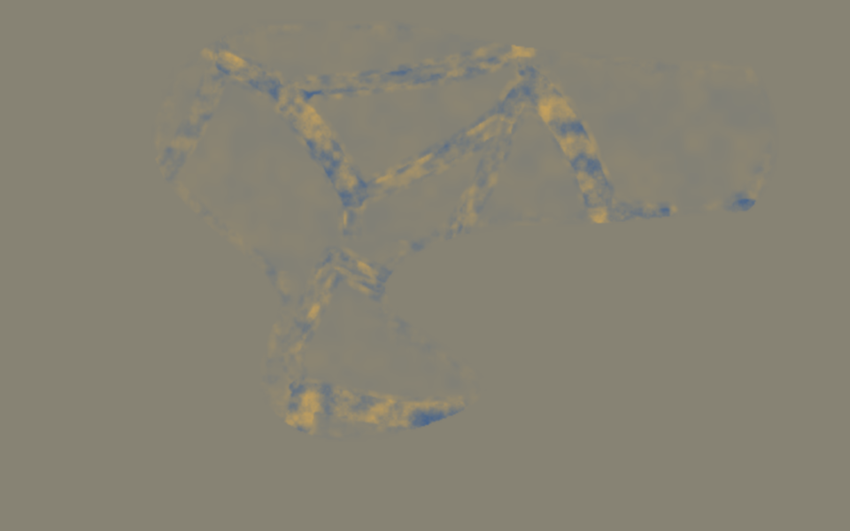
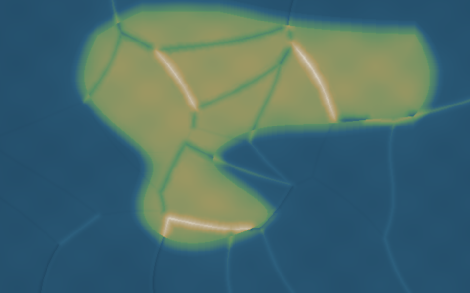

这一层已经不按 Chunk 生成地形。 Runtime 未来只需要给出绝对世界坐标
(worldX, worldZ)，GeoWorld 返回同一个连续高度函数。Chunk 只是取样窗口，不参与地形数学。H(x,z)
= CubicBSpline(ErodedElevation)
+ Σ LandformWeightᵢ(x,z) × RegionalDetailᵢ(x,z)
- ValleyCarve(x,z)
所有 Detail 噪声只读取 worldX/worldZ + Seed，不读取 Chunk 坐标。



